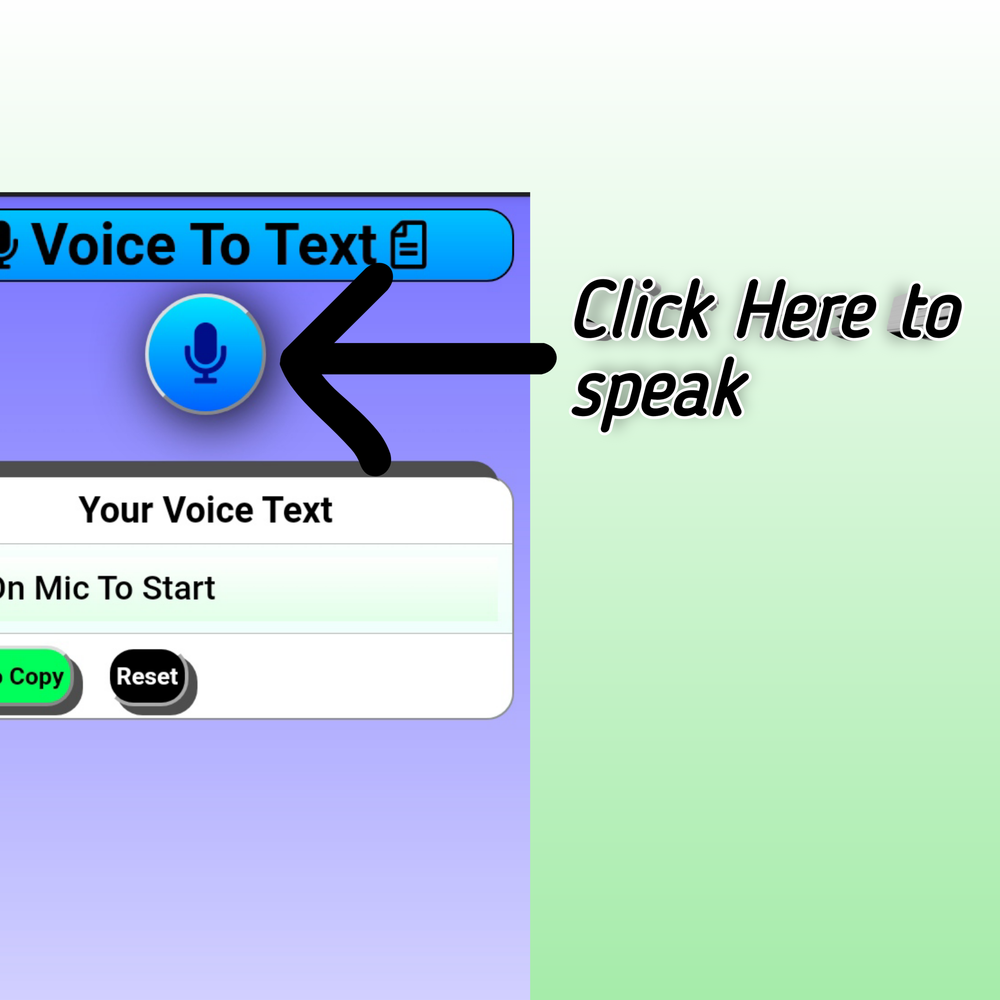
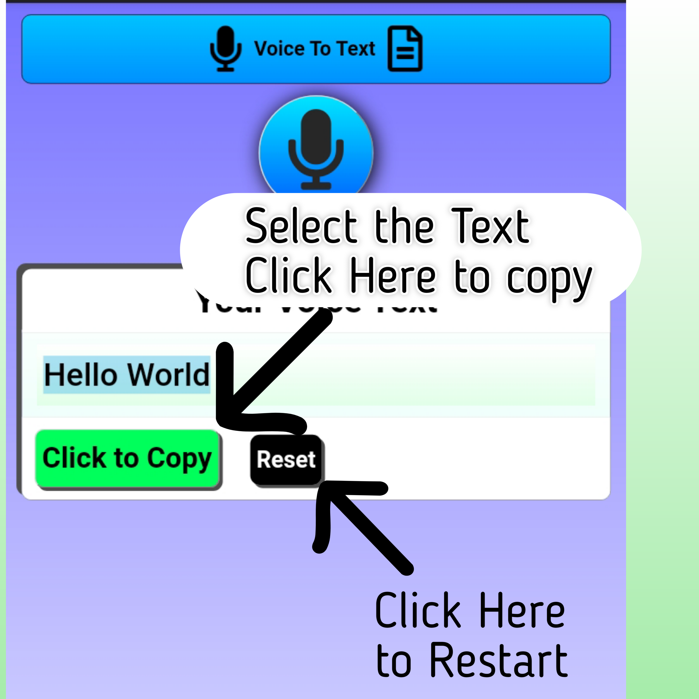

If you want text without typing!.......Then just speak and get your text ready...you can copy it and paste anywhere, where you want to use it.
1. If You want to speak Click on Mic. You can see the Text below.
2. If You want to Copy th Text Select the content and Click on Click to copy. If you want again Click on reset.
